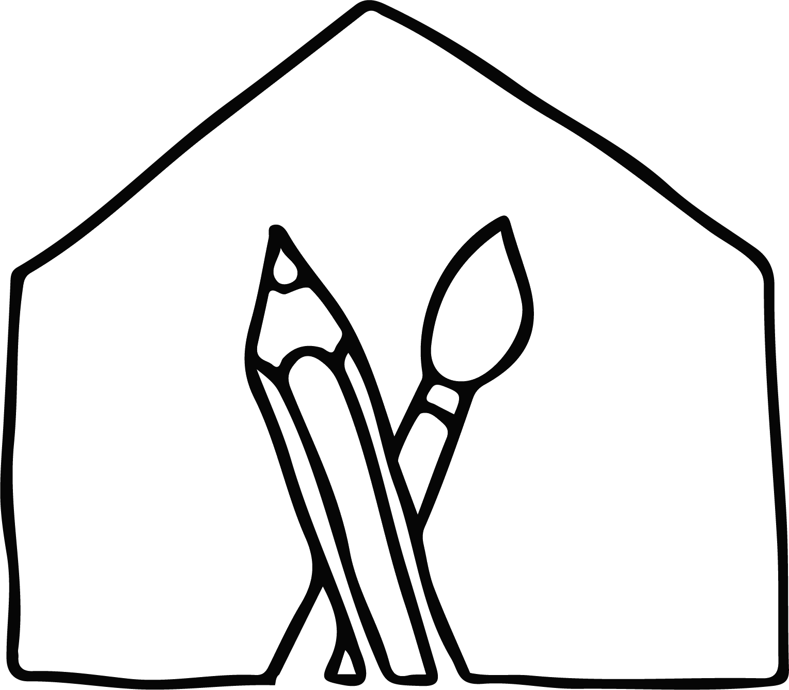
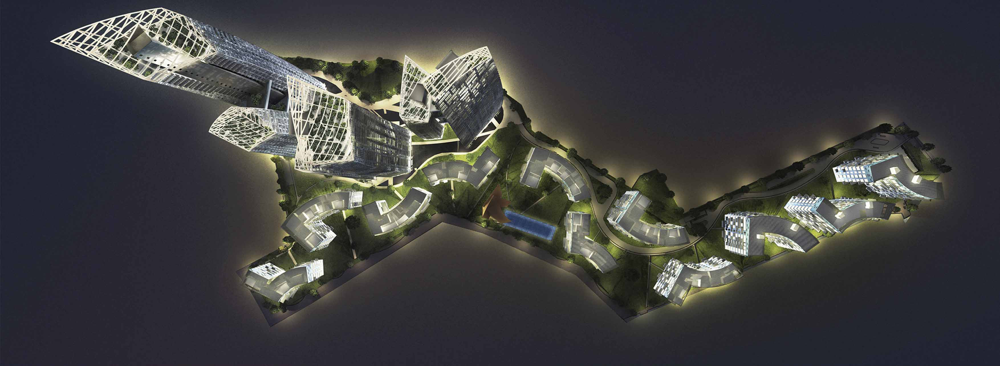
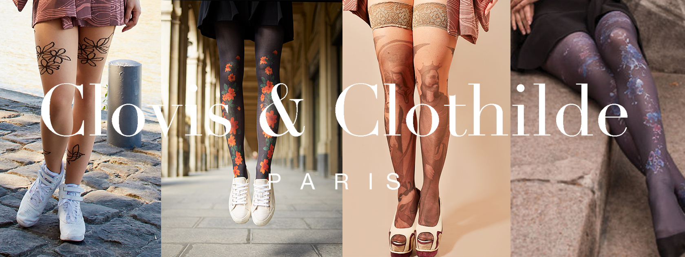
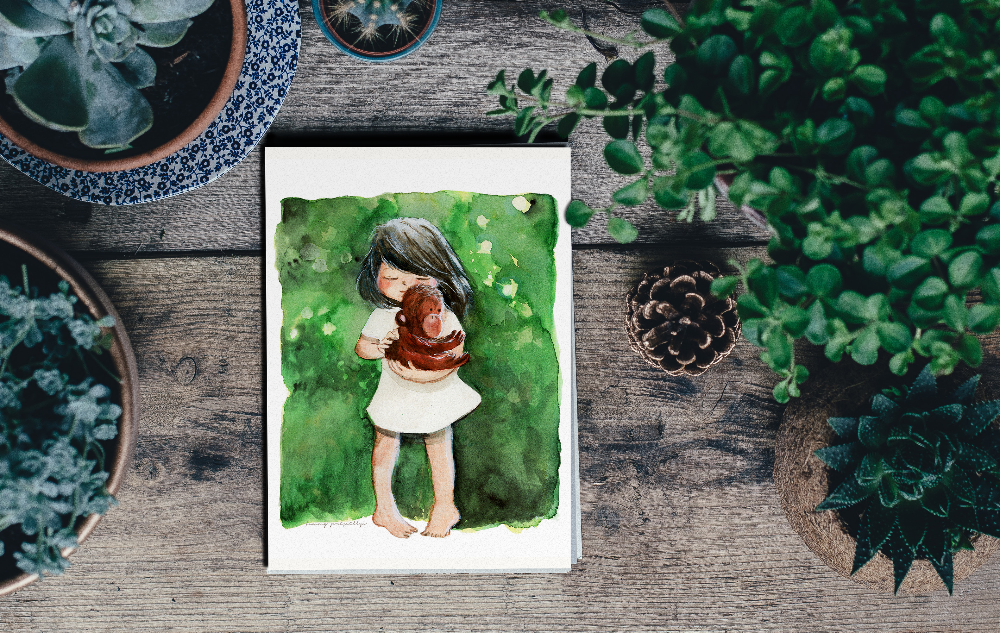

Femmy Priscillya Antolinez
Du design spatial aux expériences d’apprentissage.
Architecte de formation, conceptrice pédagogique par la pratique.

Apprentissage & ingénierie pédagogique
Contenus d’apprentissage numériques, jeux éducatifs et expériences interactives, ancrés dans une conception centrée sur l’utilisateur.
Design visuel & graphique
Identité, mise en page et communication visuelle qui rendent les contenus complexes lisibles et attrayants.
Illustration & ateliers
Illustration dessinée à la main, ainsi que des ateliers d’art et de design pour enfants et adultes.
Portfolio
À travers quatre disciplines

EdTech & ingénierie pédagogique
Voir le portfolio >>
Architecture
Voir le portfolio >>
Design graphique
Voir le portfolio >>
Art & illustration
Voir le portfolio >>À propos
Traduire des idées complexes en expériences d’apprentissage claires.
Mon parcours d'architecte m'a appris à penser en espace et en structure. C'est cette même logique que j'applique aujourd'hui à la dimension cognitive du design, comprendre comment on apprend, comment on s'approprie une idée, comment on s'y engage
Aujourd'hui, je conçois des contenus pédagogiques numériques et j'anime des ateliers créatifs, à la croisée du design thinking et de la pédagogie.